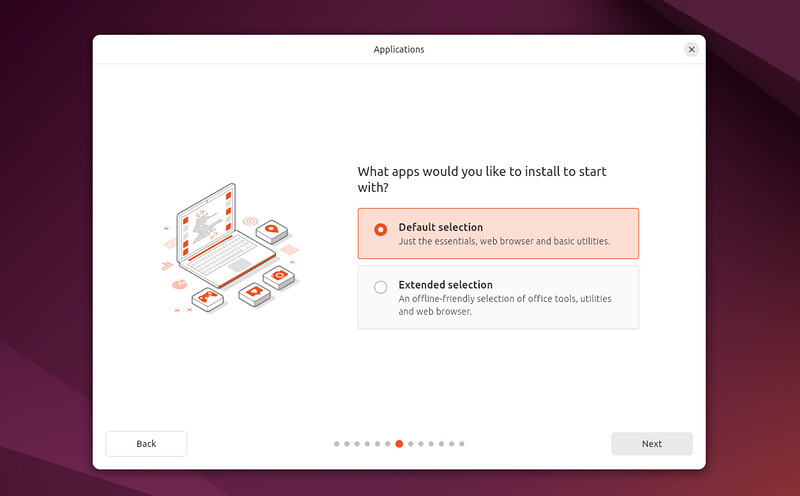

安装和部署 Ubuntu Desktopヾ(•ω•`)o
Linux简介ヾ(•ω•`)o
Linux是一个开源的、多用户、多任务的类Unix操作系统内核，以其稳定性、安全性、灵活性和强大的社区支持而广受欢迎，适用于从嵌入式设备到超级计算机的广泛硬件平台。
Linux的主流发行版包括：
- Ubuntu ：一个用户友好的发行版，适合初学者和高级用户，拥有庞大的用户社区和软件库。
- Debian ：Ubuntu的上游源，以其稳定性和强大的软件包管理系统（APT）而闻名。
- Fedora ：由Red Hat赞助，以其最新技术和创新而著称，是Red Hat Enterprise Linux（RHEL）的上游源。
- CentOS ：以前是RHEL的免费克隆，现在CentOS Stream是RHEL的上游，而CentOS 8的后续版本是AlmaLinux和Rocky Linux。
- openSUSE ：以其YaST配置工具和对硬件的支持而闻名，适合桌面和服务器使用。
- Red Hat Enterprise Linux (RHEL) ：一个商业发行版，以其企业级特性和支持而受到大型企业的青睐。
- Arch Linux ：以其滚动发布模型和高度的可定制性而受到高级用户的欢迎。
安装Linux (Ubuntu Desktop)ヾ(•ω•`)o
在官网中选择合适的Ubuntu Desktop 版本，这里选择24.04.1 LTS版本
Download Ubuntu Desktop | Ubuntu
官方的安装文档：Install Ubuntu desktop | Ubuntu
这里需要主要的是，官方推荐的USB启动器烧录程序balenaEtcher，我不知道现在的Ubuntu系统启动器是不是都这样，这个程序会安全将U盘格式化并且处理其分区，使得文件管理器无法再访问和使用其存储，能且仅能用作启动U盘。所以如果你的U盘内有重要数据，或者你的U盘容量很大，那么就不推荐用来做启动U盘了，通常一个8GB的3.0盘就足够了。
如果需要还原U盘重新用作存储，可以参考：Etcher User Documentation | Etcher 或 Etcher broke my USB stick … or did it?
Note
一般电脑主板的BIOS界面都是开机出现Logo时连续按F2，或者F9、F10、Del来启动，然后找到 引导菜单 ，选择启动U盘的名字进行安装。
Warning
此外，不要错误安装为服务器（没有图形界面），除非你需要的是服务器版本：Get Ubuntu Server | Download | Ubuntu
Success
如果是个人办公使用的话，在设置Ubuntu阶段会提示是否使用拓展安装（Extended selection）这里推荐选择是，该扩展选择包含其他 Office 工具和实用程序，适用于离线情况。 
{kind=link}
设置Ubuntu中文智能输入法ヾ(•ω•`)o
- 系统语言建议安装英文，因为很多教程和文档都是英文的，这样方便找到正确的选项
系统自带输入法ヾ(•ω•`)o
安装好的Ubuntu默认是没有中文输入法的，但是可以在系统里面设置，虽然这个输入法的智能程度我觉得一般：
Ubuntu中文设置与安装中文输入法（超详细）_ubuntu中文输入法安装-CSDN博客
Tip
Install/Remove Language 之后一定要重启，重启后重点是keyboard里面添加点+，在点开chinese展开，选择拼音；
使用搜狗输入法ヾ(•ω•`)o
- 下载：搜狗输入法linux-首页
- 官方教程：搜狗输入法linux-安装指导
Tip
按照搜狗的官方教程的第一种方法很可能是无法呼出搜狗输入法的，建议参考第二种方法，原因是缺少系统依赖项 可以参考 ubuntu 20.04 安装好搜狗输入法无法输入中文，只能输入英文的问题，因为没有安装依赖_ubuntu搜狗输入法无法输入中文-CSDN博客
Warning
一些应用，如VSCode，如果使用系统自带的 APP Center 安装是无法输入中文的！请到官网下载.deb文件Download Visual Studio Code - Mac, Linux, Windows
关于Linux安装和卸载软件ヾ(•ω•`)o
deb和rpm安装包ヾ(•ω•`)o
.deb 和 .rpm 是两种不同的软件包格式，它们分别用于不同的Linux发行版系列。以下是这两种格式的详细解释：
.deb 文件（Debian Package）
- 用途：
.deb文件是 Debian 及其衍生发行版（如 Ubuntu、Linux Mint、Raspbian 等）使用的软件包格式。 - 结构：
.deb文件是一个压缩的存档文件，包含了软件的所有文件、依赖信息、版本信息、维护者信息等。 - 安装：通常使用
dpkg命令安装.deb文件，例如： - 包管理器：
.deb文件也可以通过高级包管理器apt来管理，apt会自动处理依赖关系。
.rpm 文件（Red Hat Package Manager）
- 用途：
.rpm文件最初是为 Red Hat Linux 设计的，但现在也被其他基于 RPM 的发行版使用，如 Fedora、CentOS、RHEL（Red Hat Enterprise Linux）等。 - 结构：
.rpm文件也是一个压缩的存档文件，包含了软件包的文件、依赖信息、配置文件、文档等。 - 安装：使用
rpm命令安装.rpm文件，例如： - 包管理器：
.rpm文件可以通过yum（Red Hat的Yellowdog Updater Modified）或dnf（Fedora的Dandified YUM）等包管理器来管理，这些工具也负责处理依赖关系。
区别和兼容性
- 文件格式：
.deb和.rpm文件格式不同，它们包含的元数据和文件组织方式也不同。 - 依赖处理：
.deb和.rpm的依赖处理方式也有所不同，apt和yum/dnf处理依赖的方式也有所区别。 - 兼容性：通常情况下，
.deb文件不能直接在基于 RPM 的系统上安装，反之亦然。尽管有一些工具（如alien）可以尝试将.deb转换为.rpm或者反之，但这并不总是推荐的做法，因为可能会丢失一些包信息或依赖关系。
总的来说，.deb 和 .rpm 是两种不同的软件包管理系统，它们各自有其特定的使用场景和优势。用户应根据自己使用的Linux发行版选择合适的包格式。
Ubuntu中安装和卸载软件ヾ(•ω•`)o
安装ヾ(•ω•`)o
除了Ubuntu自带的AppCenter中的少量软件，其它绝大部分软件都需要从第三方自己下载安装包来安装，其中Ubuntu最重要的就是APT
APT (Advanced Package Tool) ：
- Ubuntu 、Debian 和其他基于Debian的发行版使用APT作为其包管理器。
- 安装软件：
sudo apt-get install package_name也可以通过APPCenter打开来安装它 - 更新软件列表：
sudo apt-get update - 升级所有软件：
sudo apt-get upgrade
Note
sudo 是一个命令行工具，代表 "superuser do"，意味着以超级用户（root）的身份执行命令。在Unix和类Unix操作系统（如Linux）中，sudo 允许授权的用户以另一个用户的安全权限（通常是root用户）来执行命令。
卸载 .deb 应用ヾ(•ω•`)o
Ubuntu - 卸载软件的三种最佳方式 - Citrusliu - 博客园
一些自带的应用可以通过AppCenter去卸载，但是大部分不可以ヾ(•ω•`)o
使用dpkg命令：ヾ(•ω•`)o
- 列出所有已安装的软件包及其状态
dpkg -l或apt list --installed - 如果你知道软件的部分名称或关键字，可以使用grep来搜索
dpkg -l | grep keyword或apt list --installed | grep -i keyword替换keyword为你想查找的软件的关键字 - 删除软件包
sudo dpkg -r package_name或sudo apt remove package_name - 卸载软件包-完全删除已安装的软件包及其配置文件
sudo dpkg -P package_name或sudo apt-get purge package_name
使用图形界面卸载：ヾ(•ω•`)o
- 使用Synaptic 1 包管理器，你可以安装它：
sudo apt-get install synaptic然后在该应用中通过筛选器或搜索你想卸载的软件包，通常在Status列中会出现“Installed”标签，第三方通常是“Installed(Manual\local\obsolete)”标签
Ubuntu 远程端口 SSH Shellヾ(•ω•`)o
确保本机和远端设备都安装好ssh后，可以直接通过命令行输入 ssh username@address 后
【Ubuntu】远程连接乌班图的方式-命令行界面、图形界面_ubuntu远程桌面-CSDN博客
Ubuntu RDP远程桌面ヾ(•ω•`)o
- 使用系统自带功能：系统提供了两个选项，
- 远程桌面协助 但是需要本地解锁才行（强烈建议您启用自动登录。在 Ubuntu Desktop 22.04 LTS 上，默认是启用屏幕空白和自动屏幕锁定。如果您的 Ubuntu 桌面空闲了一段时间，触发了屏幕空白或锁屏，您将与远程桌面会话断开连接。要解决此问题，您必须禁用屏幕空白和自动屏幕锁定以实现无缝的远程桌面会话。所以这个功能更适合远程协助2）
- 远程RDP登录，可以实现完整的权限、屏幕分辨率，是最经典的远程桌面，必须要先确保本地段已经注销，否则会黑屏。但注意，如果安装了XRDP（下面的第二部），可能会导致该选项失效。 此外，目前尝试发现，如果远程登录一个正在本地使用的账户，那么大概率会黑屏卡死，有效的解决方法是为远程桌面单独创建一个账户，用且仅用该账户作为远程桌面的登录账户。
- 使用RDP传统流程：Ubuntu22.04远程桌面配置（RDP，VNC） - pipci - 博客园 但是需要先在本地Ubuntu中注销，才能远程桌面